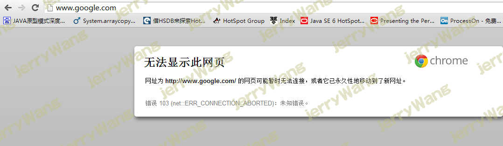
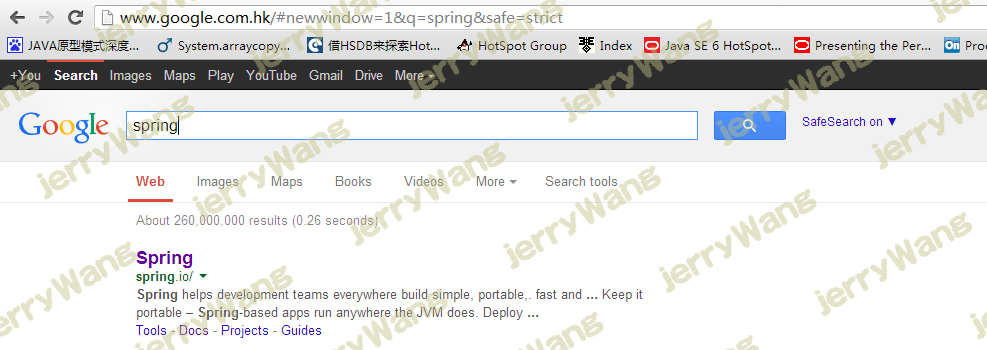
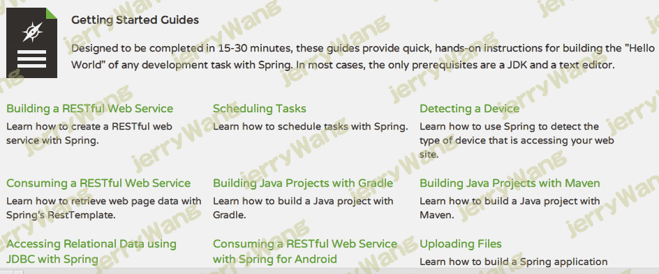
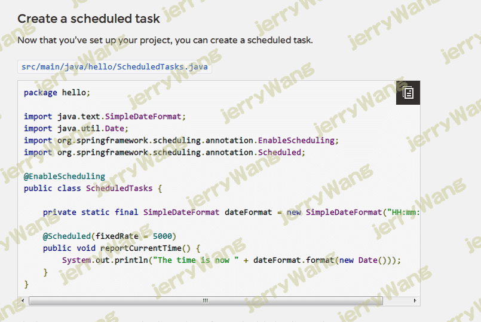

作为一个程序猿你必须会的技能----自学框架！
引言
这篇文章主要来源于和群里猿友的聊天，有猿友问LZ该如何学习一个框架。LZ想了想，这确实是一个值得探究的问题，于是这篇博文就应运而生了。接下来LZ就和各位猿友分享一下LZ个人学习框架的一些方式和方法，或许对大部分人还是有一些启迪作用的。
找到它的老家
对LZ个人来说，当LZ想要学习一个框架的时候，首要做的就是找到它的老家。打开你的浏览器，输入网址：www.google.com（为何不是百度？因为我们学习的框架几乎没有china的），然后输入你想学习的框架，比如spring（本文以它为例，其余其实都是类似的）。
第一个出现的一般就是它的老家，就像下面这样。

擦，剧情不该是这样的，导演掐了重新来一遍啊。该死的google老是这样。据之前LZ的某老师说，这都是度娘干的。
好吧，甭管是谁干的，我们只管不断F5即可，最终你会看到下面的画面。

bingo。画面出来了。这就是spring的老家，我们想要研究它就从它开始吧。接下来请你默默的打开它的链接。是的，默默的。
直入正题，找例子
接下来我们就要直入正题了，进入它的页面后，你会看到这样的导航。
看到了吗？看到了吗？
guides，LZ蹩脚的英文大概看出来它就是向导的意思，于是我们果断进来一看究竟。进来以后，你会发现一堆向导，这里就是你的百宝箱。

里面有各种各样的例子供你使用。接下来你需要做的就是按照其中某一个一步一步的做下去，直到完成你的目的。比如你想做一个任务调度器，那么就果断进入Scheduling Tasks。接下来，你就看到了这样一个无脑学习的页面。

看到了吗，你只需要ctrl+C/V就可以完成你的任务。不过这只是一个开始，因为这毕竟只是一个简单的例子，你还需要根据你当前的需要进行一些改变。如果你需要的正是这个例子，那么就再好不过了。
寻找文档
通常情况下，在你完成任务的过程当中，总会遇到这样或者那样的问题，就算没有遇到，如果想要学习一个框架的话，一个完整的说明文档往往也是你需要的。在接下来的过程当中，我们的任务就是寻找文档。这个过程往往是最困难和痛苦的，这与LZ蹩脚的英文有很大关系，所以每次找文档都让LZ痛苦并快乐着。
不过这里面总有一些大概的规律，比如doc、document、documentation这样的字样总是那么的亲切。而且我们不需要担心一个框架没有文档，因为对于开发它们的人来说，我们就是客户，就是上帝，所以他们必须要让上帝能看懂他们写的东西。否则的话，他们写的东西是没有客户的，没有客户就意味着没有创造价值，没有创造价值就意味着可能会被炒鱿鱼，被炒鱿鱼就意味着可能会被媳妇嫌弃，被媳妇嫌弃就意味着可能会被@#￥&绿#&%￥&*
LZ并不会把文档看的太深入，主要就是看一些自己开发需要的东西，还有很重要的一点就是，从当中找到框架的核心实现原理。比如spring当中，IOC的相关内容就是它的核心实现原理，因为spring的所有框架（比如AOP、security等等）都是建立在IOC的基础之上的。
寻找入口，跟踪源码
这下例子也看过了，任务也完成了，文档也有了，如果我们想要更加深入的了解一个框架，那么源码就是必不可少的一个环节了。说起来还是得感谢JAVA的开发氛围，几乎所有的东西都是开源的，所以你总能找到源码。
标题当中提到了入口，所谓寻找入口，就是寻找一个框架的切入点。比如spring的入口就在web.xml当中的监听器，而struts2的入口就是web.xml当中的过滤器，常用缓存的入口往往存在spring管理的缓存的定制工厂bean当中等等。
找到入口，你就能从头开始调试，了解整个框架初始化的过程，以及初始化后是如何工作的。在跟踪源码的过程中，最好结合你的例子，搞清楚你的例子是如何运行的。比如刚才的定时器调度，搞清楚spring是如何帮你进行调度的，比如执行任务的线程是如何分配的，任务的触发是如何进行的等等。
找到框架的优劣势并努力体会它
说到这里，请各位猿友想象一下，当你在逛商场的时候，如果你想要买某一样东西，一般情况下，你总会在各个品牌或者同一个品牌的不同类型之间相互比较，如果你从不这么做，请允许LZ尊称你为“土豪”。
如果你这么做了，请仔细的想想，你是在比较什么？
当然是优势和劣势了！
对于我们程序猿来说，框架就是一个一个的商品，而我们就是这些商品的客户。如果你想要做一个能买到物美价廉的商品的客户，就必须了解各个商品的优劣势。只有了解了各个商品的优劣势，我们才能在众多的框架当中选择合适的框架，你说是吗？
所以，不用说，我们要想了解一个框架，就必须知道它的优劣势，尤其是劣势。优势一般在框架的老家当中就能找到，因为这是在为他们的项目吹牛皮呢，他们的官网自然不会忘了这一项。至于劣势，就需要自己根据例子、源码以及其实现原理好好体会一下了。
结束语
框架说到底就是一个商品，我们只是其中一个用户罢了。因此LZ不建议各位猿友把框架的研究当做毕生梦想，更不建议各位沦陷于研究各种各样的框架，或者去尝试各种框架的例子，并很自豪的对着镜子说“你好厉害，你竟然会这么多框架”。注意！请你至少完成了以上几件事，再说你会这个框架吧。
框架只是我们针对特定场景所作出的选择，因此我们只需要有学习框架的能力即可，千万不要想着能把全世界所有品牌的牛奶都尝试着喝一遍，如果你非要这么做的话，LZ保证你一定会死于非命的。这就像你买药一样，你只需要知道当你感冒的时候应该吃什么药，当你拉肚子的时候应该吃什么药就好。更好的情况是，当你万一有其它毛病时，你也可以通过一些途径找到适合你的药。
话已至此，LZ就啰嗦到这里吧。总之，深入的研究一下少数几个优秀的框架，还是非常有益的，但不要贪多，学会适可而止即可。
 微信
微信 支付宝
支付宝